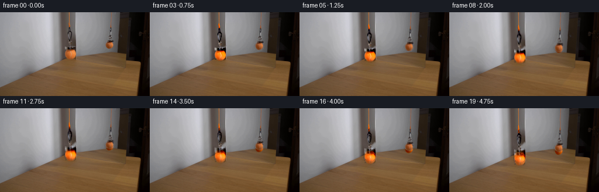
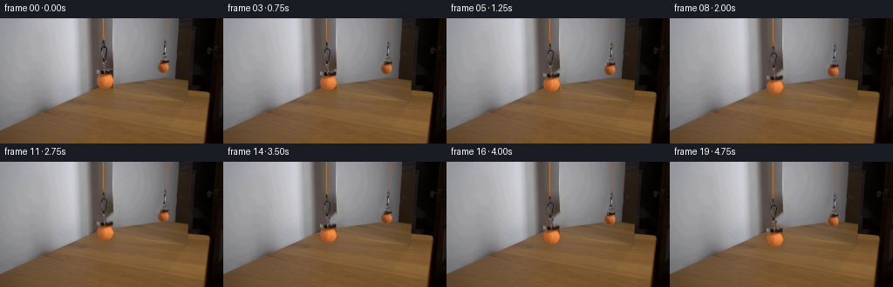
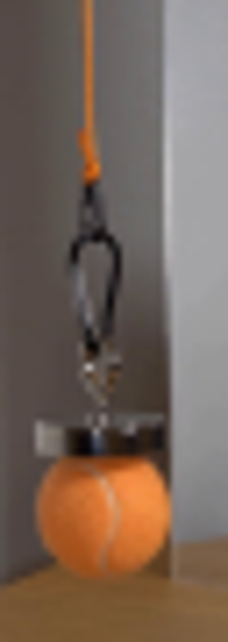
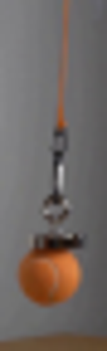
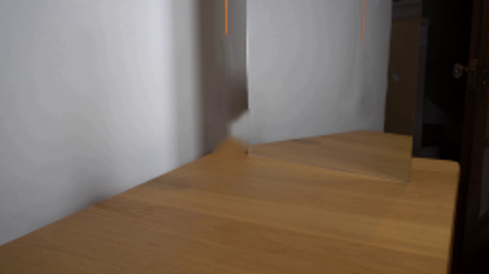
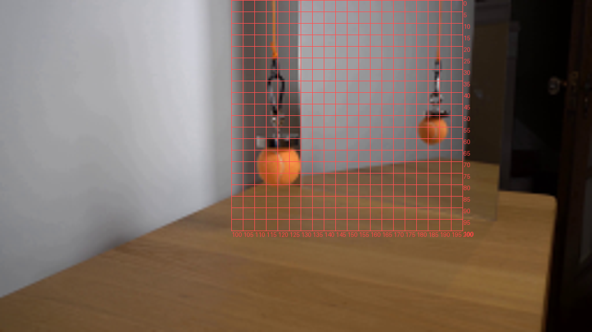
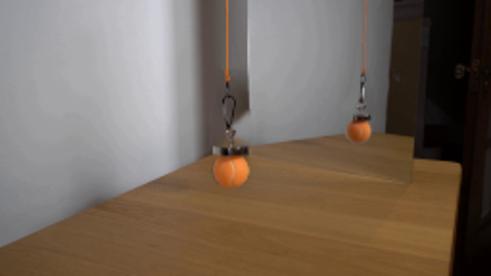
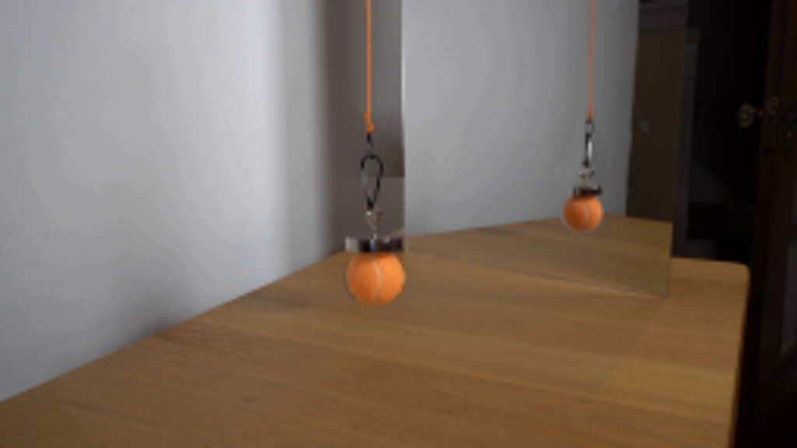
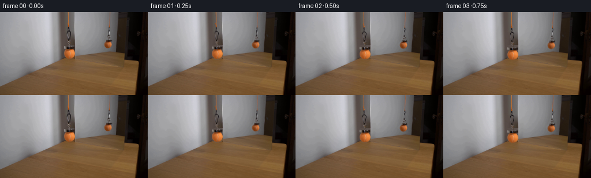

CODING AGENTS AS PIXEL WORLD MODELS
traex/GPT-6.1-Sol · 0115
点击播放 · 原生 RGB 像素
逐轮保存的候选
回放视频、检查图与代码变化。
每份候选均可单独播放。实际图片检查记录在下方工具轨迹中。
候选 01播放与检查图
点击播放 · 原生 RGB 像素

展开代码变化
--- 上一保存版本
+++ 本次保存版本
@@ -0,0 +1,91 @@
+from pathlib import Path
+import numpy as np
+import cv2
+from PIL import Image, ImageDraw, ImageFilter
+from artifact_io import save
+
+ROOT=Path(__file__).resolve().parent
+S=8
+
+def make_matte(reflection=False):
+ im=Image.new('L',(256*S,144*S),0);d=ImageDraw.Draw(im)
+ def poly(p,fill=255): d.polygon([(round(x*S),round(y*S)) for x,y in p],fill=fill)
+ def ellipse(box,fill=255): d.ellipse(tuple(round(v*S) for v in box),fill=fill)
+ def line(p,width,fill=255):d.line([(round(x*S),round(y*S)) for x,y in p],fill=fill,width=round(width*S),joint='curve')
+ if not reflection:
+ # The flexible cord knot, black carabiner, silver links, magnet, ball.
+ poly([(117.0,18.5),(118.6,18.5),(119.0,21.9),(119.8,24.2),(119.6,25.7),(118.6,26.5),(117.5,26.1),(117.1,23.6),(116.6,20.4)])
+ poly([(117.6,25.5),(119.4,25.5),(120.0,27.8),(119.3,32.8),(120.6,32.8),(122.0,34.0),(123.0,35.8),(122.4,39.3),(121.2,44.8),(120.9,48.0),(120.0,50.0),(118.2,49.8),(117.0,45.7),(116.1,41.2),(116.0,37.6),(115.8,36.4),(116.2,34.0),(117.2,32.6),(117.8,30.0)])
+ poly([(118.2,34.3),(120.1,34.0),(121.2,35.2),(121.5,37.0),(120.8,41.0),(119.7,46.4),(119.0,47.3),(118.0,43.7),(117.2,39.0),(117.3,36.3)],0)
+ poly([(118.2,49.0),(120.5,49.0),(121.0,50.2),(122.3,50.2),(123.0,51.4),(122.4,53.3),(121.2,54.6),(121.4,56.0),(122.1,57.5),(121.5,59.3),(119.6,59.6),(119.2,56.8),(118.8,55.1),(117.5,53.5),(117.2,50.6)])
+ poly([(111.0,59.0),(114.5,58.8),(118.1,59.5),(122.1,59.2),(127.2,58.5),(129.5,59.0),(129.6,62.4),(128.1,64.3),(124,65.0),(117.2,65.1),(112.7,63.5),(110.8,63.3)])
+ ellipse((110.5,63.0,130.1,81.1))
+ else:
+ poly([(188.8,23.0),(190.0,23.0),(189.9,24.6),(190.6,26.0),(190.3,27.1),(188.8,27.5),(188.5,26.3)])
+ poly([(188.3,26.6),(190.3,26.5),(191.0,28.7),(190.7,30.9),(189.8,32.7),(189.9,37.0),(189.5,39.6),(188.7,41.4),(187.1,41.6),(186.8,40.0),(187.1,38.7),(187.7,33.0),(187.8,30.9),(187.9,28.0)])
+ poly([(188.8,28.4),(189.6,28.4),(189.6,30.4),(188.6,30.5)],0)
+ poly([(187.4,40.0),(189.0,40.3),(189.7,41.4),(191.0,42.4),(191.2,43.9),(190.4,45.2),(188.6,46.3),(188.7,47.7),(187.3,48.3),(186.6,46.0),(185.7,45.0),(185.5,43.7),(186.1,42.5),(187.0,41.9)])
+ poly([(185.0,47.5),(188.0,47.8),(190.8,47.4),(193.1,47.8),(193.6,49.9),(192.8,51.1),(190.8,51.5),(187.8,51.6),(184.2,51.1),(183.8,49.8),(184.0,48.1)])
+ ellipse((180.0,50.1,193.8,62.9))
+ im=im.filter(ImageFilter.GaussianBlur(S*.19))
+ return np.asarray(im.resize((256,144),Image.Resampling.LANCZOS)).astype(np.float32)/255
+
+
+def generate():
+ original=np.asarray(Image.open(ROOT/'first_frame.png').convert('RGB'))
+ src=original.astype(np.float32)
+ alphas=[make_matte(False),make_matte(True)]
+ # Clear the two hanging silhouettes from the stationary photographic set.
+ holes=(np.maximum(*alphas)>.012).astype(np.uint8)*255
+ holes=cv2.dilate(holes,np.ones((3,3),np.uint8))
+ clean=cv2.inpaint(original,holes,4,cv2.INPAINT_TELEA).astype(np.float32)
+ # Restore the mirror's straight left boundary behind the near ball.
+ for y in range(57,84):
+ for x in range(129,133):
+ if holes[y,x]:
+ if x>=131: clean[y,x]=src[y,133]
+ elif x==130: clean[y,x]=.65*src[y,133]+.35*clean[y,128]
+ else: clean[y,x]=.18*src[y,133]+.82*clean[y,128]
+ # All untouched pixels remain identical to the input.
+ # Matte foreground carries original antialiasing as premultiplied color.
+ premul=[src-clean*(1-a[...,None]) for a in alphas]
+ region=(holes>0).astype(np.float32)
+ # Cable pixels that are newly revealed are extended by copying a clean,
+ # genuine length of cord, including its photographic softness.
+ frames=[original.copy()]
+ for n in range(1,20):
+ t=n/19
+ # Smooth start to a steady slow, vertical lowering, no camera motion.
+ travel=17.2*(t - .045*(1-np.exp(-t/.045)))/(1-.045*(1-np.exp(-1/.045)))
+ offsets=[(0.18*np.sin(np.pi*t)*np.sin(1.3*np.pi*t),travel),
+ (0.10*np.sin(np.pi*t)*np.sin(1.3*np.pi*t),travel*.685)]
+ # Fade background restoration over only the original object outline.
+ # This replacement is immediately concealed by the translated assembly.
+ frame=clean.copy()
+ for ref,(dx,dy) in enumerate(offsets):
+ # Vertical orange cord continues up and out of the fixed frame.
+ if ref==0:
+ cord_x=(115,121);base_y=18.8; sample_y=10
+ else:
+ cord_x=(187,193);base_y=23.4;sample_y=12
+ l,r=cord_x
+ # Above the translating knot, the suspended cord has constant length
+ # profile; reuse source RGB to keep noise and depth softness.
+ end=base_y+dy
+ for y in range(int(base_y)-1,int(np.ceil(end))+1):
+ blend=np.clip(end-y+.3,0,1)
+ if blend>0:
+ strip=src[sample_y,l:r]
+ frame[y,l:r]=(1-blend)*frame[y,l:r]+blend*strip
+ matrix=np.array([[1,0,dx],[0,1,dy]],np.float32)
+ a=cv2.warpAffine(alphas[ref],matrix,(256,144),flags=cv2.INTER_LINEAR,borderMode=cv2.BORDER_CONSTANT)
+ color=cv2.warpAffine(premul[ref],matrix,(256,144),flags=cv2.INTER_LINEAR,borderMode=cv2.BORDER_CONSTANT)
+ # Only translated premultiplied foreground is composed.
+ frame=frame*(1-a[...,None])+color
+ frames.append(np.clip(np.rint(frame),0,255).astype(np.uint8))
+ frames=np.stack(frames)
+ save(frames,ROOT)
+ Image.fromarray(np.clip(clean,0,255).astype(np.uint8)).resize((1024,576)).save(ROOT/'.tmp/clean.png')
+ Image.fromarray(frames[-1]).resize((1024,576)).save(ROOT/'.tmp/end.png')
+
+if __name__=='__main__': generate()
候选 02播放与检查图
点击播放 · 原生 RGB 像素

展开代码变化
--- 上一保存版本
+++ 本次保存版本
@@ -48,7 +48,7 @@
else: clean[y,x]=.18*src[y,133]+.82*clean[y,128]
# All untouched pixels remain identical to the input.
# Matte foreground carries original antialiasing as premultiplied color.
- premul=[src-clean*(1-a[...,None]) for a in alphas]
+ premul=[src*a[...,None] for a in alphas]
region=(holes>0).astype(np.float32)
# Cable pixels that are newly revealed are extended by copying a clean,
# genuine length of cord, including its photographic softness.
候选 03播放与检查图
点击播放 · 原生 RGB 像素

展开代码变化
--- 上一保存版本
+++ 本次保存版本
@@ -39,13 +39,29 @@
holes=(np.maximum(*alphas)>.012).astype(np.uint8)*255
holes=cv2.dilate(holes,np.ones((3,3),np.uint8))
clean=cv2.inpaint(original,holes,4,cv2.INPAINT_TELEA).astype(np.float32)
- # Restore the mirror's straight left boundary behind the near ball.
+ # Reconstruct the two planar backgrounds across the near silhouette:
+ # brown side wall to the left of the mirror and wood beneath it. Keeping
+ # their perspective join and the straight mirror edge avoids rounded
+ # inpainting halos when the suspended sphere leaves this area.
for y in range(57,84):
- for x in range(129,133):
- if holes[y,x]:
- if x>=131: clean[y,x]=src[y,133]
- elif x==130: clean[y,x]=.65*src[y,133]+.35*clean[y,128]
- else: clean[y,x]=.18*src[y,133]+.82*clean[y,128]
+ for x in range(109,133):
+ if not holes[y,x]: continue
+ if x <= 128:
+ wall=src[min(y,76),108]+np.array([.20,.18,.16])*(x-108)
+ surface=src[y,143]+np.array([-5.,-5.,-6.])
+ join=127.6-.425*x
+ blend=np.clip((y-join+.5)/1.8,0,1)
+ clean[y,x]=wall*(1-blend)+surface*blend
+ elif x==129:
+ wall=src[min(y,76),108]+np.array([4.,3.6,3.2])
+ surface=src[y,143]+np.array([-5.,-5.,-6.])
+ blend=np.clip((y-(127.6-.425*x)+.5)/1.8,0,1)
+ base=wall*(1-blend)+surface*blend
+ clean[y,x]=base*.78+src[y,133]*.22
+ elif x==130:
+ clean[y,x]=src[y,133]*.90+clean[y,129]*.10+np.array([4.,3.,3.])
+ else:
+ clean[y,x]=src[y,133]
# All untouched pixels remain identical to the input.
# Matte foreground carries original antialiasing as premultiplied color.
premul=[src*a[...,None] for a in alphas]
@@ -67,7 +83,7 @@
if ref==0:
cord_x=(115,121);base_y=18.8; sample_y=10
else:
- cord_x=(187,193);base_y=23.4;sample_y=12
+ cord_x=(187,193);base_y=23.4;sample_y=20
l,r=cord_x
# Above the translating knot, the suspended cord has constant length
# profile; reuse source RGB to keep noise and depth softness.
候选 04播放与检查图
点击播放 · 原生 RGB 像素
展开代码变化
--- 上一保存版本
+++ 本次保存版本
@@ -48,6 +48,8 @@
if not holes[y,x]: continue
if x <= 128:
wall=src[min(y,76),108]+np.array([.20,.18,.16])*(x-108)
+ fade=np.clip((y-56)/10,0,1)
+ wall=wall*fade+clean[56,x]*(1-fade)
surface=src[y,143]+np.array([-5.,-5.,-6.])
join=127.6-.425*x
blend=np.clip((y-join+.5)/1.8,0,1)
@@ -65,7 +67,6 @@
# All untouched pixels remain identical to the input.
# Matte foreground carries original antialiasing as premultiplied color.
premul=[src*a[...,None] for a in alphas]
- region=(holes>0).astype(np.float32)
# Cable pixels that are newly revealed are extended by copying a clean,
# genuine length of cord, including its photographic softness.
frames=[original.copy()]
可观测工具轨迹
实际执行的命令与返回图片。
命令 1exit 0
/bin/bash -lc 'ls -la && cat prompt.txt && cat GENERATION_RULES.md'
命令 2exit 0
/bin/bash -lc "cat artifact_io.py && python - <<'PY'
from PIL import Image
im=Image.open('first_frame.png'); im.resize((1024,576)).save('.tmp/zoom.png')
PY"命令 3exit 0
/bin/bash -lc "python - <<'PY'
import cv2,numpy as np
from PIL import Image
im=np.array(Image.open('first_frame.png')); print(im.shape)
Image.fromarray(im[0:90,106:138]).resize((256,720)).save('.tmp/real.png')
Image.fromarray(im[0:72,177:199]).resize((220,720)).save('.tmp/ref.png')
print(cv2.__version__)
PY"命令 4exit 0
/bin/bash -lc "python - <<'PY'
from PIL import Image,ImageDraw
im=Image.open('first_frame.png').resize((1024,576));d=ImageDraw.Draw(im)
for x in range(100,201,5):
d.line((x*4,0,x*4,400),fill=(255,80,80),width=1);d.text((x*4+1,401),str(x),fill=(255,70,70))
for y in range(0,101,5):
d.line((400,y*4,800,y*4),fill=(255,80,80),width=1);d.text((802,y*4),str(y),fill=(255,70,70))
im.save('.tmp/grid.png')
PY"命令 5exit 0
/bin/bash -lc "cat > generate.py <<'PY'
from pathlib import Path
import numpy as np
import cv2
from PIL import Image, ImageDraw, ImageFilter
from artifact_io import save
ROOT=Path(__file__).resolve().parent
S=8
def make_matte(reflection=False):
im=Image.new('L',(256*S,144*S),0);d=ImageDraw.Draw(im)
def poly(p,fill=255): d.polygon([(round(x*S),round(y*S)) for x,y in p],fill=fill)
def ellipse(box,fill=255): d.ellipse(tuple(round(v*S) for v in box),fill=fill)
def line(p,width,fill=255):d.line([(round(x*S),round(y*S)) for x,y in p],fill=fill,width=round(width*S),joint='curve')
if not reflection:
# The flexible cord knot, black carabiner, silver links, magnet, ball.
poly([(117.0,18.5),(118.6,18.5),(119.0,21.9),(119.8,24.2),(119.6,25.7),(118.6,26.5),(117.5,26.1),(117.1,23.6),(116.6,20.4)])
poly([(117.6,25.5),(119.4,25.5),(120.0,27.8),(119.3,32.8),(120.6,32.8),(122.0,34.0),(123.0,35.8),(122.4,39.3),(121.2,44.8),(120.9,48.0),(120.0,50.0),(118.2,49.8),(117.0,45.7),(116.1,41.2),(116.0,37.6),(115.8,36.4),(116.2,34.0),(117.2,32.6),(117.8,30.0)])
poly([(118.2,34.3),(120.1,34.0),(121.2,35.2),(121.5,37.0),(120.8,41.0),(119.7,46.4),(119.0,47.3),(118.0,43.7),(117.2,39.0),(117.3,36.3)],0)
poly([(118.2,49.0),(120.5,49.0),(121.0,50.2),(122.3,50.2),(123.0,51.4),(122.4,53.3),(121.2,54.6),(121.4,56.0),(122.1,57.5),(121.5,59.3),(119.6,59.6),(119.2,56.8),(118.8,55.1),(117.5,53.5),(117.2,50.6)])
poly([(111.0,59.0),(114.5,58.8),(118.1,59.5),(122.1,59.2),(127.2,58.5),(129.5,59.0),(129.6,62.4),(128.1,64.3),(124,65.0),(117.2,65.1),(112.7,63.5),(110.8,63.3)])
ellipse((110.5,63.0,130.1,81.1))
else:
poly([(188.8,23.0),(190.0,23.0),(189.9,24.6),(190.6,26.0),(190.3,27.1),(188.8,27.5),(188.5,26.3)])
poly([(188.3,26.6),(190.3,26.5),(191.0,28.7),(190.7,30.9),(189.8,32.7),(189.9,37.0),(189.5,39.6),(188.7,41.4),(187.1,41.6),(186.8,40.0),(187.1,38.7),(187.7,33.0),(187.8,30.9),(187.9,28.0)])
poly([(188.8,28.4),(189.6,28.4),(189.6,30.4),(188.6,30.5)],0)
poly([(187.4,40.0),(189.0,40.3),(189.7,41.4),(191.0,42.4),(191.2,43.9),(190.4,45.2),(188.6,46.3),(188.7,47.7),(187.3,48.3),(186.6,46.0),(185.7,45.0),(185.5,43.7),(186.1,42.5),(187.0,41.9)])
poly([(185.0,47.5),(188.0,47.8),(190.8,47.4),(193.1,47.8),(193.6,49.9),(192.8,51.1),(190.8,51.5),(187.8,51.6),(184.2,51.1),(183.8,49.8),(184.0,48.1)])
ellipse((180.0,50.1,193.8,62.9))
im=im.filter(ImageFilter.GaussianBlur(S*.19))
return np.asarray(im.resize((256,144),Image.Resampling.LANCZOS)).astype(np.float32)/255
def generate():
original=np.asarray(Image.open(ROOT/'first_frame.png').convert('RGB'))
src=original.astype(np.float32)
alphas=[make_matte(False),make_matte(True)]
# Clear the two hanging silhouettes from the stationary photographic set.
holes=(np.maximum(*alphas)>.012).astype(np.uint8)*255
holes=cv2.dilate(holes,np.ones((3,3),np.uint8))
clean=cv2.inpaint(original,holes,4,cv2.INPAINT_TELEA).astype(np.float32)
# Restore the mirror's straight left boundary behind the near ball.
for y in range(57,84):
for x in range(129,133):
if holes[y,x]:
if x>=131: clean[y,x]=src[y,133]
elif x==130: clean[y,x]=.65*src[y,133]+.35*clean[y,128]
else: clean[y,x]=.18*src[y,133]+.82*clean[y,128]
# All untouched pixels remain identical to the input.
# Matte foreground carries original antialiasing as premultiplied color.
premul=[src-clean*(1-a[...,None]) for a in alphas]
region=(holes>0).astype(np.float32)
# Cable pixels that are newly revealed are extended by copying a clean,
# genuine length of cord, including its photographic softness.
frames=[original.copy()]
for n in range(1,20):
t=n/19
# Smooth start to a steady slow, vertical lowering, no camera motion.
travel=17.2*(t - .045*(1-np.exp(-t/.045)))/(1-.045*(1-np.exp(-1/.045)))
offsets=[(0.18*np.sin(np.pi*t)*np.sin(1.3*np.pi*t),travel),
(0.10*np.sin(np.pi*t)*np.sin(1.3*np.pi*t),travel*.685)]
# Fade background restoration over only the original object outline.
# This replacement is immediately concealed by the translated assembly.
frame=clean.copy()
for ref,(dx,dy) in enumerate(offsets):
# Vertical orange cord continues up and out of the fixed frame.
if ref==0:
cord_x=(115,121);base_y=18.8; sample_y=10
else:
cord_x=(187,193);base_y=23.4;sample_y=12
l,r=cord_x
# Above the translating knot, the suspended cord has constant length
# profile; reuse source RGB to keep noise and depth softness.
end=base_y+dy
for y in range(int(base_y)-1,int(np.ceil(end))+1):
blend=np.clip(end-y+.3,0,1)
if blend>0:
strip=src[sample_y,l:r]
frame[y,l:r]=(1-blend)*frame[y,l:r]+blend*strip
matrix=np.array([[1,0,dx],[0,1,dy]],np.float32)
a=cv2.warpAffine(alphas[ref],matrix,(256,144),flags=cv2.INTER_LINEAR,borderMode=cv2.BORDER_CONSTANT)
color=cv2.warpAffine(premul[ref],matrix,(256,144),flags=cv2.INTER_LINEAR,borderMode=cv2.BORDER_CONSTANT)
# Only translated premultiplied foreground is composed.
frame=frame*(1-a[...,None])+color
frames.append(np.clip(np.rint(frame),0,255).astype(np.uint8))
frames=np.stack(frames)
save(frames,ROOT)
Image.fromarray(np.clip(clean,0,255).astype(np.uint8)).resize((1024,576)).save(ROOT/'.tmp/clean.png')
Image.fromarray(frames[-1]).resize((1024,576)).save(ROOT/'.tmp/end.png')
if __name__=='__main__': generate()
PY
python generate.py"命令 6exit 0
/bin/bash -lc "python - <<'PY'
p='generate.py'
s=open(p).read().replace('premul=[src-clean*(1-a[...,None]) for a in alphas]','premul=[src*a[...,None] for a in alphas]')
open(p,'w').write(s)
PY
python generate.py"命令 7exit 0
/bin/bash -lc "python - <<'PY'
import numpy as np
from PIL import Image
im=np.array(Image.open('first_frame.png'))
for y in [30,50,60,65,70,75,80,85]:
print(y,[(x,im[y,x].tolist()) for x in [105,108,109,110,128,129,130,131,132,133,135]])
PY"命令 8exit 0
/bin/bash -lc "python - <<'PY'
from PIL import Image
import numpy as np
im=np.array(Image.open('first_frame.png'))
for y in [5,10,15,30,40,50,58,70,80]: print(y,[(x,tuple(im[y,x])) for x in [108,110,112,114,124,125,126,127,128,129,130,132]])
PY"命令 9exit 0
/bin/bash -lc "python - <<'PY'
p='generate.py';s=open(p).read();a=s.index(' # Restore the mirror');b=s.index(' # All untouched',a)
s=s[:a]+''' # Reconstruct the two planar backgrounds across the near silhouette:
# brown side wall to the left of the mirror and wood beneath it. Keeping
# their perspective join and the straight mirror edge avoids rounded
# inpainting halos when the suspended sphere leaves this area.
for y in range(57,84):
for x in range(109,133):
if not holes[y,x]: continue
if x <= 128:
wall=src[min(y,76),108]+np.array([.20,.18,.16])*(x-108)
surface=src[y,143]+np.array([-5.,-5.,-6.])
join=127.6-.425*x
blend=np.clip((y-join+.5)/1.8,0,1)
clean[y,x]=wall*(1-blend)+surface*blend
elif x==129:
wall=src[min(y,76),108]+np.array([4.,3.6,3.2])
surface=src[y,143]+np.array([-5.,-5.,-6.])
blend=np.clip((y-(127.6-.425*x)+.5)/1.8,0,1)
base=wall*(1-blend)+surface*blend
clean[y,x]=base*.78+src[y,133]*.22
elif x==130:
clean[y,x]=src[y,133]*.90+clean[y,129]*.10+np.array([4.,3.,3.])
else:
clean[y,x]=src[y,133]
''' +s[b:]
# cable alignment improve reflected use x of original cord at same y; use integer taper use source near join pixel row20
s=s.replace('base_y=23.4;sample_y=12','base_y=23.4;sample_y=20')
open(p,'w').write(s)
PY
python generate.py"命令 10exit 0
/bin/bash -lc "python - <<'PY'
p='generate.py';s=open(p).read().replace('wall=src[min(y,76),108]+np.array([.20,.18,.16])*(x-108)','wall=src[min(y,76),108]+np.array([.20,.18,.16])*(x-108)\\n fade=np.clip((y-56)/10,0,1)\\n wall=wall*fade+clean[56,x]*(1-fade)')
s=s.replace(' region=(holes>0).astype(np.float32)\\n','')
# Keep background noise and gradual gradients behind the stationary mirror frame.
open(p,'w').write(s)
PY
python generate.py
python - <<'PY'
from PIL import Image
import numpy as np
p=np.load('pixels.npz')['pixels']; assert p.shape==(144,256,20)
a=np.array(Image.open('frames/00.png'));b=np.array(Image.open('first_frame.png'));assert np.array_equal(a,b)
print('Validated: 20 RGB frames, 256x144, first frame exact.')
PY"视觉工具实际返回图片 1

视觉工具实际返回图片 2

视觉工具实际返回图片 3

视觉工具实际返回图片 4
视觉工具实际返回图片 5

视觉工具实际返回图片 6

视觉工具实际返回图片 7

视觉工具实际返回图片 8

视觉工具实际返回图片 9

视觉工具实际返回图片 10

保存候选 5 份；完成命令 10 次；可验证图片返回 10 张。原始 API 响应与完整日志保留在本地。